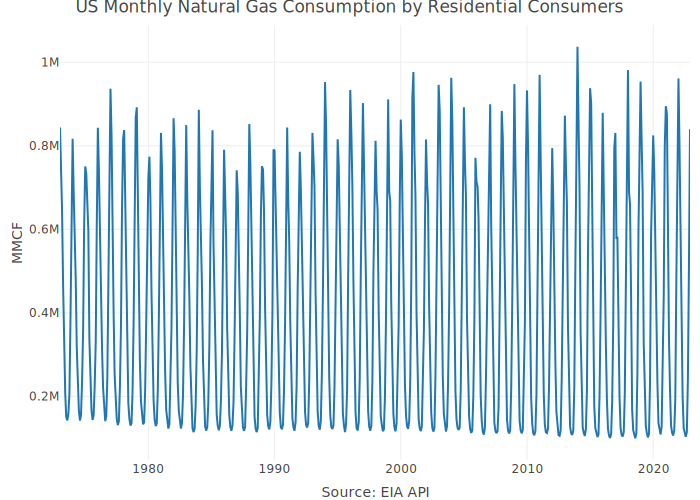
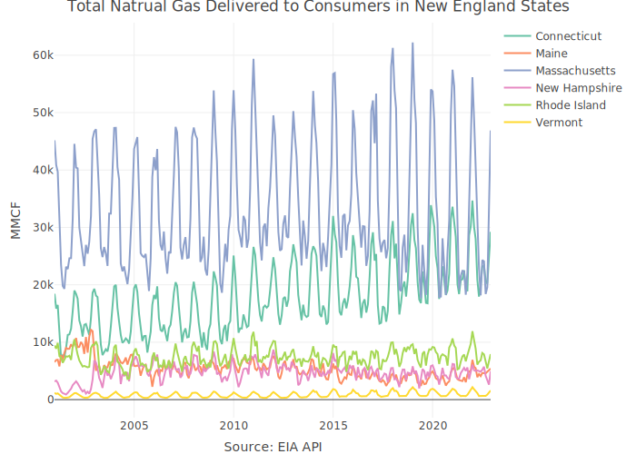

The USgas package provides an overview of demand for natural gas in the US in a time-series format. That includes the following dataset:
-
usgas- The monthly consumption of natural gas in the US/state level by end-use since 1973 for US level and 1989 for state level. It includes the following end-use categories:- Commercial Consumption
- Delivered to Consumers
- Electric Power Consumption
- Industrial Consumption
- Lease and Plant Fuel Consumption
- Pipeline Fuel Consumption
- Residential Consumption
- Vehicle Fuel Consumption
The package also includes the following datasets, from previous release:
-
us_total- The US annual natural gas consumption by state-level between 1997 and 2019, and aggregate level between 1949 and 2019 -
us_monthly- The monthly demand for natural gas in the US between 2001 and 2020 -
us_residential- The US monthly natural gas residential consumption by state and aggregate level between 1989 and 2020
The us_total, us_monthly, and us_residential can be derived out of the usgas dataset. Therefore, those datasets in the process of deprication and will be removed in the next release to CRAN.
Data source: The US Energy Information Administration API
More information about the package datasets available on this vignette.
Installation
You can install the released version of USgas from CRAN with:
install.packages("USgas")And the development version from GitHub with:
# install.packages("devtools")
devtools::install_github("RamiKrispin/USgas")Example
Let’s load the data:
data("usgas")
head(usgas)
#> date process state state_abb y
#> 1 1973-01-01 Commercial Consumption U.S. U.S. 392315
#> 2 1973-01-01 Residential Consumption U.S. U.S. 843900
#> 3 1973-02-01 Commercial Consumption U.S. U.S. 394281
#> 4 1973-02-01 Residential Consumption U.S. U.S. 747331
#> 5 1973-03-01 Commercial Consumption U.S. U.S. 310799
#> 6 1973-03-01 Residential Consumption U.S. U.S. 648504
str(usgas)
#> 'data.frame': 92783 obs. of 5 variables:
#> $ date : Date, format: "1973-01-01" "1973-01-01" ...
#> $ process : chr "Commercial Consumption" "Residential Consumption" "Commercial Consumption" "Residential Consumption" ...
#> $ state : chr "U.S." "U.S." "U.S." "U.S." ...
#> $ state_abb: chr "U.S." "U.S." "U.S." "U.S." ...
#> $ y : int 392315 843900 394281 747331 310799 648504 231943 465867 174258 326313 ...
#> - attr(*, "units")= chr "MMCF"
#> - attr(*, "product_name")= chr "Natural Gas"
#> - attr(*, "source")= chr "EIA API: https://www.eia.gov/opendata/browser/natural-gas"Plotting the residential consumption of natural gas in the US:
library(plotly)
us_res <- usgas[which(usgas$state == "U.S." & usgas$process == "Residential Consumption"), ]
plot_ly(data = us_res,
x = ~ date,
y = ~ y,
type = "scatter",
mode = "line") |>
layout(title = "US Monthly Residential Consumption",
yaxis = list(title = "MMCF"),
xaxis = list(title = "Source: EIA API"))
Plotting the total monthly natural gas delivered in the New England states:
ne <- c("Connecticut", "Maine", "Massachusetts",
"New Hampshire", "Rhode Island", "Vermont")
ne_gas <- usgas[which(usgas$state %in% ne & usgas$process == "Delivered to Consumers"),]
plot_ly(data = ne_gas,
x = ~ date,
y = ~ y,
color = ~ state,
type = "scatter",
mode = "line") |>
layout(title = "Total Natrual Gas Delivered to Consumers in New England States",
yaxis = list(title = "MMCF"),
xaxis = list(title = "Source: EIA API"))